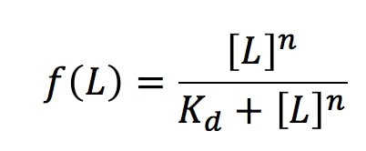
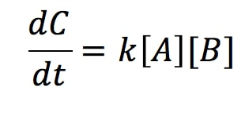
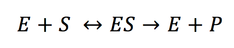
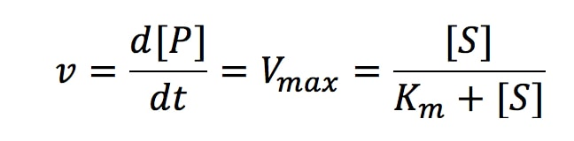

The basal expression of mRNA or a protein refers to its “default” expression level. Essentially, it’s the level of mRNA/ protein that will be constitutively produced in a cell independent of the activity of its promoter.
Cellular automata are discrete models used in computational biology to model the state of a cell at a particular point in time. The cells are represented on a grid and their state (on/ off, alive/dead) changes according to a set of rules which is dependent on the number of neighboring cells.
The Game of Life, (which we adapted for our purposes), represents a stochastic cellular automaton. A stochastic cellular automaton differs from conventional cellular automata by the fact that the cells are updated according to probability distributions.The Game of Life was developed in the 1970s by John Conway. Cells which can be either in the "born", "alive" or "dead" state are initialised on a 2D grid. The idea is to visually represent the evoluation of the state of the cells over time according to a set of rules.
The Hill equation is used in computational biology to describe the interaction between a ligand and its binding site. The general form of the Hill equation is expressed as:
where,
f(L) = Fraction of the protein concentration bound to the ligand
L = free ligand concentration
n = Hill coefficient
Kd = Dissociation constant which follows mass action kinetics
The Hill equation is often adapted in mathematical modelling to allow for parameter optimisation. In our case we implemented a form of the Hill equation that had been adapted to represent a photo-activated cellular mechanism to determine the rate of photo - induction (k1).
Two parameters had been added to the equation to account for our modelling needs:
a = accounts for the basal expression level of the promoter (LuxI)
k = accounts for the maximum expression of the promoter due to light intensity 0
Mass action kinetics describe chemical reactions. It assumes that the rate of chemical reaction is proportional concentration of the initial reactants.
Mass action kinetics assumes:
Given an ordinary differential equation,
Where the rate of reaction k is proportional to the concentrations of A and B
The Michaelis Menten equation was created to describe the rate kinetics in enzymatic reactions. Computational biologists commonly use the Michaelis Menten equation to describe the rate kinetics of cellular mechanisms. The steps described by the Michaelis Menten kinetics, can be represented schematically:
where,
E = enzyme
S = substrate
ES = enzyme substrate complex
P = product
The rate at which the final product is formed is given by the following equation:
where,
v = rate of product concentration over time
P = concentration of product
Vmax = maximal rate of reactio7
S = concentration of the substrate
Km = Michaelis Menten constant (value of concentration of ‘the substrate when the velocity = ½ maximum velocity)